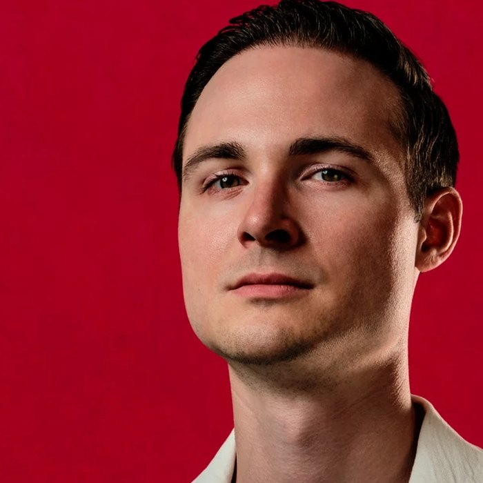

HERO-VARIANTEN · PATRICK STROBUSCH
Vier Lösungen fürs Farbproblem
Jede Variante geht anders mit dem roten Hintergrund um, damit nichts mehr gegeneinander kämpft. Scroll durch und sag mir die Nummer, die am besten aussieht — die bauen wir dann final ein.
Variante 1 — Freigestellt
Akte geöffnet · True Crime & Twitch
PatrickStrobusch
Host des True-Crime-Podcasts »Schwarze Akte« und Twitch-Streamer thepaetrick.
Foto freigestellt (kein roter Hintergrund) → fügt sich komplett ins dunkle Design ein. Kein Farbkonflikt.
Variante 2 — Bernstein-Duotone
Akte geöffnet · True Crime & Twitch
PatrickStrobusch
Host des True-Crime-Podcasts »Schwarze Akte« und Twitch-Streamer thepaetrick.
Foto in Bernstein-Duotone umgefärbt → der rote Hintergrund wird warmes Braun und liegt exakt auf der Palette. Alles aus einem Guss.
Variante 3 — Editorial Rot
Akte geöffnet · True Crime & Twitch
PatrickStrobusch
Host des True-Crime-Podcasts »Schwarze Akte« und Twitch-Streamer thepaetrick.

thepaetrick · Schwarze Akte
Rot bleibt — aber bewusst gesetzt: cleane Magazin-Karte, Akzente neutral (Bone statt Amber), damit Rot und Gold nicht mehr kämpfen.
Variante 4 — Cinematic Grade
Akte geöffnet · True Crime & Twitch
PatrickStrobusch
Host des True-Crime-Podcasts »Schwarze Akte« und Twitch-Streamer thepaetrick.
Originalfoto, aber cinematisch gegradet (entsättigt, abgedunkelt, warm) + Vignette → das Rot wird zu gedämpftem Bordeaux und verschmilzt mit dem Dunkel.